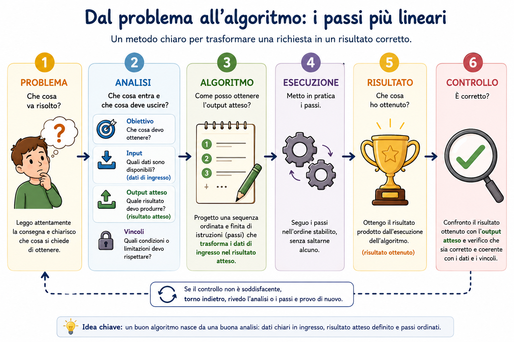

Prima di iniziare: dati e informazioni
Nella Lezione 04 hai osservato le parti fisiche del computer. La tastiera permette di inserire dati, la CPU esegue le istruzioni dei programmi, la RAM conserva dati e istruzioni in uso e lo schermo mostra i risultati. Quando calcoli il costo di una visita, queste parti collaborano.
La Lezione 03 ci ha aiutato a distinguere hardware e software. Ora cominciamo a progettare le istruzioni: il computer può eseguire un calcolo, ma dobbiamo stabilire quali dati servono, quale operazione fare e che cosa mostrare.
Riprendiamo anche la distinzione della Lezione 01: «4» da solo è un dato; «servono 4 biglietti» gli dà un significato. Se ogni biglietto costa 7 euro, possiamo usare questi dati per trovare una spesa di 28 euro.
Nella Lezione 02 hai visto che i dati nel computer sono rappresentati in binario. Nel laboratorio lavoreremo con numeri e parole leggibili: non occorre convertire i valori in binario per progettare il procedimento.
Fermati due minuti: nel calcolo dei biglietti, quali sono i dati inseriti? Quale risultato vuoi leggere? Quale parte fisica ti permette di comunicarlo al computer? Puoi rispondere a voce o annotare tre parole chiave.
Obiettivi della lezione
Al termine saprai analizzare un problema semplice, costruire un primo diagramma eseguibile e spiegare perché il risultato è corretto.
Il percorso nelle due ore
Lavora un blocco alla volta. Le attività quotidiane aggiuntive e l'iterazione sono facoltative: puoi riprenderle a casa. In coppia, alternate chi usa il computer e chi legge i passi e controlla i risultati.
- 0–10 minuti: richiamo iniziale e analisi della richiesta.
- 10–25 minuti: algoritmo, input, output, vincoli ed esempio dei biglietti. Gli esempi del compito si leggono insieme; zaino e attività autonome restano per il ripasso.
- 25–35 minuti: primi passi in Flowgorithm e sequenza di due messaggi.
- 35–60 minuti: laboratorio 1, variabili, calcolo e prove.
- 60–65 minuti: pausa e confronto sulle difficoltà.
- 65–85 minuti: laboratorio 2, una scelta e tre test.
- 85–105 minuti: esercizi progressivi: svolgi 1 e 2; scegli 3 o 4 se hai tempo.
- 105–115 minuti: verifica individuale e correzione.
- 115–120 minuti: collegamento al C e consegna dei file.
Per seguire i passaggi: tieni visibile una consegna alla volta, usa i nomi di variabile proposti e annota input e output su un foglio. Puoi usare la scheda delle forme durante il laboratorio e rispondere a voce alle domande di ripasso.
Situazione iniziale: consegnare un compito
Hai terminato una relazione e devi consegnarla sulla piattaforma scolastica entro le 18:00, in formato PDF e con il nome indicato dal docente. Fare subito clic su «Consegna» non basta: prima devi capire la richiesta.
Che cosa ottenere?
Una consegna corretta e visibile al docente.
Quali sono gli input?
Il documento, le credenziali e le istruzioni.
Quali limiti?
Scadenza, formato e nome del file.
Quali azioni?
Preparare, caricare, eseguire la consegna e controllare.
Questa situazione mostra l'idea centrale della lezione: prima di agire, analizziamo il problema.
Problema, soluzione e algoritmo
Partiamo dall'esempio concreto e diamo un nome ai tre elementi principali.
Problema
Descrive una situazione da risolvere e ciò che deve essere ottenuto.
Soluzione
È il modo scelto per affrontare il problema.
Algoritmo
È una sequenza finita di istruzioni precise ed eseguibili che stabilisce come ottenere un risultato a partire dai dati ammessi. Le istruzioni possono comprendere operazioni in ordine, scelte e ripetizioni.
Durante l'analisi distinguiamo i dati di ingresso (input) dal risultato che vogliamo ottenere, chiamato risultato atteso (output). L'algoritmo descrive i passi necessari per trasformare gli input nell'output atteso. L'esecuzione produce un risultato ottenuto, che deve poi essere controllato.

Leggi il percorso della mappa in forma testuale
- Problema: leggi la richiesta.
- Analisi: individua obiettivo, input, output atteso e vincoli.
- Algoritmo: scrivi i passi.
- Esecuzione: svolgi le istruzioni.
- Risultato ottenuto: osserva ciò che viene prodotto.
- Controllo: confrontalo con l'output atteso; se non coincide, rivedi analisi o passi.
Come deve essere un buon algoritmo
Una semplice lista di frasi non è sufficiente. Il procedimento deve avere caratteristiche precise.
Ordinato
I passi sono nella successione corretta.
Finito
Termina dopo un numero limitato di passi.
Comprensibile
Chi lo legge capisce che cosa deve fare.
Non ambiguo
Ogni istruzione ha un significato preciso.
Eseguibile
Le azioni possono essere svolte con i mezzi disponibili.
Efficace
Per gli input ammessi, produce il risultato richiesto. Le prove aiutano a trovare errori; pochi test riusciti non dimostrano da soli che funzioni in ogni caso.
Gli elementi da individuare
Per analizzare un problema usa cinque domande-guida.
Obiettivo
Lo scopo da raggiungere.
Domanda: Che cosa devo ottenere?
Dati di ingresso (input)
Le informazioni disponibili all'inizio e necessarie per affrontare il problema.
Domanda: Quali dati conosco o ricevo?
Risultato atteso (output)
Ciò che la soluzione deve produrre o comunicare.
Domanda: Quale risultato deve uscire dal procedimento?
Vincoli
Le condizioni e i limiti che devono essere rispettati.
Domanda: Quali condizioni devo rispettare?
Passi
Le azioni necessarie, espresse nella successione corretta.
Domanda: Come trasformo i dati di ingresso nel risultato atteso?
Primo esempio guidato: consegnare il compito
- Problema
- Consegnare correttamente la relazione sulla piattaforma.
- Obiettivo
- Fare in modo che il docente riceva il file richiesto entro la scadenza.
- Dati di ingresso (input)
- Relazione completata, istruzioni, credenziali e orario di scadenza.
- Output atteso
- Consegna registrata con il file corretto.
- Vincoli
- Formato PDF, nome richiesto, dimensione accettata e consegna entro le 18:00.
Passi ordinati in linguaggio naturale
- Rileggi le istruzioni.
Controlla formato, nome e scadenza.
- Apri la relazione.
Verifica che il contenuto sia completo.
- Prepara il file.
Salvalo in PDF con il nome richiesto.
- Accedi alla piattaforma.
Apri l'attività indicata dal docente.
- Carica e consegna.
Seleziona il file corretto e conferma.
- Esegui e osserva il risultato.
La conferma visualizzata dopo l'invio è il risultato ottenuto.
- Controlla.
Confronta la conferma, il nome del file e l'orario con l'output atteso e con i vincoli.
Controllo finale: il risultato ottenuto coincide con l'output atteso? Il file visualizzato è corretto e la consegna risulta registrata prima delle 18:00?
Secondo esempio guidato: il costo dei biglietti
Situazione: per una visita servono 4 biglietti uguali. Ogni biglietto costa 7 euro. Quanto si spende in totale?
- Individua gli input.
Servono 4 biglietti e ciascuno costa 7 euro.
- Definisci l'output atteso.
Occorre ottenere il costo complessivo.
- Scegli l'operazione.
Moltiplica il numero di biglietti per il costo unitario.
- Esegui il calcolo.
4 × 7 = 28. La moltiplicazione equivale all'addizione ripetuta 7 + 7 + 7 + 7.
- Comunica il risultato ottenuto.
La spesa complessiva è di 28 euro.
- Controlla.
Verifica che 28 euro sia plausibile e che il risultato abbia l'unità di misura.
L'ordine delle istruzioni conta
Se provi a caricare la relazione prima di convertirla in PDF, potresti scegliere il file sbagliato. Se comunichi il costo prima di fare il calcolo, non hai ancora un risultato. Cambiare l'ordine può rendere il procedimento inefficace.
Istruzioni ambigue o incomplete
Un'istruzione ambigua permette interpretazioni diverse; un'istruzione incompleta non fornisce ciò che serve per agire.
«Sistema il file nel posto giusto»
Problema: non indica quale file né quale cartella.
Più precisa: «Sposta il file relazione.pdf nella cartella Consegna».
«Fai il calcolo necessario»
Problema: non specifica quali valori usare né che cosa calcolare.
Più precisa: «Considera quattro volte il costo di 7 euro».
«Ripeti alcune volte»
Problema: «alcune» non stabilisce quante volte.
Più precisa: «Esegui il controllo tre volte».
«Usa un numero abbastanza grande»
Problema: persone diverse possono scegliere numeri diversi.
Più precisa: «Usa un numero maggiore di 100».
🧭 Ripasso facoltativo — Preparare lo zaino
Situazione: domani hai educazione fisica alla prima ora e devi preparare lo zaino questa sera.
- Problema.
Preparare tutto il necessario senza dimenticare oggetti.
- Obiettivo.
Avere uno zaino completo e pronto prima di andare a dormire.
- Dati di ingresso (input).
Orario scolastico, elenco del materiale e oggetti presenti in casa.
- Output atteso.
Uno zaino con libri, quaderni e materiale per educazione fisica.
- Vincoli.
Completa tu: quali limiti di tempo, spazio o disponibilità devi rispettare?
- Passi ordinati.
Scrivi quattro o cinque azioni, iniziando dal controllo dell'orario.
- Risultato ottenuto e controllo.
Osserva il contenuto dello zaino e confrontalo con l'output atteso, l'orario e l'elenco.
Apri un possibile completamento
Vincoli: preparare lo zaino entro sera, usare lo spazio disponibile e inserire soltanto il materiale necessario.
Passi: leggere l'orario; elencare il materiale; recuperare gli oggetti; inserirli nello zaino; confrontare il contenuto con l'elenco.
Attività autonome per il ripasso a casa
Per ogni situazione individua gli elementi, ordina i passi, correggi le ambiguità e poi presenta la soluzione a voce.
1. Inviare una fotografia al docente
La fotografia deve essere leggibile, in formato JPG, nominata «cognome-attivita» e inviata entro domani.
- Individua problema, obiettivo, dati di ingresso, output atteso e vincoli.
- Scrivi cinque passi ordinati in linguaggio naturale.
- Sostituisci l'istruzione ambigua «manda la foto nel modo giusto».
- Spiega oralmente la soluzione in un minuto.
Controlla la tua analisi
Elementi: l'obiettivo è far ricevere una fotografia corretta; gli input sono fotografia, istruzioni e scadenza; l'output atteso è l'invio registrato con il file corretto; i vincoli sono leggibilità, formato, nome e tempo.
Passi possibili: scattare la foto; controllarne la leggibilità; salvarla in JPG; assegnare il nome richiesto; inviarla. La conferma è il risultato ottenuto, da confrontare con l'output atteso.
2. Acquistare quaderni uguali
Occorrono 5 quaderni. Ogni quaderno costa 3 euro. Quanto si spende?
- Individua problema, obiettivo, dati di ingresso, output atteso e vincoli.
- Descrivi in ordine il ragionamento e il controllo.
- Rendi precisa l'istruzione «fai il conto».
- Spiega oralmente la soluzione in un minuto.
Controlla la tua analisi
Gli input sono 5 quaderni e 3 euro ciascuno; l'output atteso è il costo complessivo. L'esecuzione del calcolo 5 × 3 produce il risultato ottenuto di 15 euro. Il controllo conferma che è plausibile perché cinque oggetti da 3 euro costano più di 3 euro e meno di 20.
💻 Prima di calcolare: una sequenza in Flowgorithm
Occorrente: Flowgorithm già disponibile sul computer, una cartella in cui salvare e un foglio per prevedere i risultati. Se non hai il programma, segui il diagramma su carta con un compagno; potrai eseguirlo in laboratorio.
Flowgorithm permette di costruire ed eseguire diagrammi di flusso: forme collegate da frecce che rappresentano istruzioni e ordine di esecuzione. Le etichette possono essere in italiano o in inglese; qui trovi entrambi i nomi. Colori e aspetto possono cambiare: riconosci le forme dalla funzione.
- Apri un nuovo diagramma.
Individua la forma iniziale
Maine quella finaleEnd. Per ora lascia queste due forme al loro posto. - Inserisci il primo messaggio.
Fai clic sulla freccia tra inizio e fine. Scegli Output (Uscita). Apri la forma con un doppio clic e, nel campo dell'espressione, scrivi
"Inizio del laboratorio", comprese le virgolette dritte. Conferma. - Aggiungi un secondo Output.
Fai clic sulla freccia sotto il primo messaggio. Inserisci
"Ora controllo il risultato". Lascia attiva l'opzione per andare a capo nei due Output. - Prevedi, poi esegui.
Scrivi l'ordine dei due messaggi. Avvia il diagramma con il comando di esecuzione Run (Esegui), riconoscibile dal triangolo di avvio. Leggi i messaggi nella console, cioè la finestra di input e output.
- Salva e modifica.
Salva come
01-sequenza.fprg. Inverti i due testi e riesegui: quale riga compare per prima? Ripristina poi l'ordine iniziale.
Questa è una sequenza: le istruzioni vengono eseguite nell'ordine indicato dalle frecce. Hai già un programma che produce due risultati osservabili.
Confronta con il diagramma svolto
Scarica la sequenza di due messaggi (.fprg). Aprila con Flowgorithm dopo aver provato a costruirla.
I dati cambiano: servono le variabili
Per 4 biglietti da 7 euro il totale è 28 euro. Per 3 biglietti da 2.5 euro è 7.5 euro. Possiamo usare lo stesso procedimento cambiando i dati: leggiamo quantità e prezzo, li moltiplichiamo e mostriamo il totale.
Una variabile ha un nome, un tipo e un valore che può cambiare durante l'esecuzione. Per esempio, quantita conserva il numero di biglietti inserito. Il nome ci permette di usare quel valore nei calcoli.
Prima di usare una variabile la dichiariamo: scegliamo nome e tipo. Useremo Integer per quantità intere e Real per prezzi e risultati che possono avere decimali. Nei nomi proposti non ci sono spazi né accenti.
Se leggiamo 4 e 7, l'operazione quantita * prezzo dà 28. L'assegnazione calcola questa espressione e memorizza il risultato in totale. Il simbolo * indica la moltiplicazione.
Le cinque forme usate nei laboratori
Declare · Dichiarazione
Prepara una variabile e ne stabilisce il tipo.
Esempio: Nome quantita, tipo Integer.
Input · Ingresso
Legge un valore digitato e lo conserva nella variabile.
Esempio: Variabile quantita.
Assign · Assegnazione
Calcola e memorizza un valore.
Esempio: Variabile totale, espressione quantita * prezzo.
Output · Uscita
Mostra un testo o un valore.
Esempio: "Totale in euro:", oppure totale senza virgolette.
If · Se
Valuta una condizione e sceglie uno dei due rami.
Esempio: totale <= budget: il totale è minore o uguale al budget?
💻 Laboratorio 1 · Calcolare il costo dei biglietti
Consegna: leggi il numero di biglietti e il prezzo di un biglietto. Calcola e mostra la spesa totale in euro.
- Input ammessi: quantità intera maggiore o uguale a zero; prezzo maggiore o uguale a zero. In queste prove usiamo valori piccoli.
- Output atteso: quantità × prezzo, comunicato come importo in euro.
- Vincolo: tutti i biglietti hanno lo stesso prezzo; non ci sono sconti o spese aggiuntive. Il diagramma assume input validi: non li controlla ancora.
Prima del computer: per 4 biglietti da 7 euro scrivi sul foglio il risultato atteso, 28 euro. Sarà il riferimento per il primo test.
- Crea e salva.
Apri un nuovo diagramma e salvalo come
02-biglietti.fprg. - Dichiara le variabili.
Tra
MaineEndinserisci tre forme Declare, nell'ordine:quantitadi tipoInteger;prezzodi tipoReal;totaledi tipoReal. Per ogni forma apri le proprietà, imposta nome e tipo e conferma. - Chiedi la quantità.
Dopo le dichiarazioni aggiungi un Output con
"Quanti biglietti?". Sotto aggiungi un Input e imposta come variabilequantita, senza virgolette. - Chiedi il prezzo.
Aggiungi un Output con
"Prezzo di un biglietto in euro?", seguito da un Input nella variabileprezzo. Per i decimali delle prove usa il punto:2.5. - Calcola il totale.
Aggiungi una forma Assign. Nel campo della variabile scrivi
totale; nel campo dell'espressione scriviquantita * prezzo. Non scrivere l'intera uguaglianza nel campo della variabile. - Mostra il risultato.
Aggiungi un Output con
"Totale in euro:"e poi un secondo Output contotale, senza virgolette. Lascia attiva l'andata a capo. Per ora teniamo testo e numero in due forme distinte. - Esegui il primo test.
Avvia con Run, inserisci prima
4e poi7. Il risultato deve essere 28, preceduto dall'indicazione dell'unità di misura. Salva con Ctrl + S. - Segui un'istruzione alla volta.
Avvia una nuova esecuzione con il comando Step (Passo). Avanza una forma alla volta e osserva le variabili nella finestra di controllo dei valori (Variable Watch). Se non è visibile, richiamala dal menu delle finestre. Annota quando vengono letti
quantitaeprezzoe quando viene calcolatototale.
Controlla l'ordine prima di eseguire
- Tre dichiarazioni.
- Messaggio e lettura della quantità.
- Messaggio e lettura del prezzo.
- Assegnazione del prodotto a
totale. - Messaggio «Totale in euro:» e visualizzazione del valore.
Traccia del primo calcolo: «—» indica un valore non ancora fornito o calcolato
Input quantità
quantita: 4; prezzo: —; totale: —.
Input prezzo
quantita: 4; prezzo: 7; totale: —.
Assign totale
quantita: 4; prezzo: 7; totale: 28.
Ripeti con dati diversi
Un test è una prova con input scelti e un output atteso stabilito prima dell'esecuzione. Confronta il risultato ottenuto con quello previsto. Compila sul foglio anche una colonna «ottenuto» e una colonna «esito».
Test del laboratorio 1 · Risultati in euro
Quantità 4, prezzo 7
Totale atteso: 28 euro.
Il caso svolto.
Quantità 3, prezzo 2.5
Totale atteso: 7.5 euro.
Un prezzo con decimali.
Quantità 0, prezzo 7
Totale atteso: 0 euro.
Nessun biglietto.
Quantità 2, prezzo 0
Totale atteso: 0 euro.
Biglietti gratuiti.
Apri la soluzione dopo il tentativo
Scarica il diagramma completo dei biglietti (.fprg). Se il browser mostra il contenuto del file, usa «Salva link con nome» e mantieni l'estensione .fprg; poi aprilo in Flowgorithm. Il numero può essere mostrato come 28 oppure 28.0: il valore è lo stesso.
💻 Laboratorio 2 · Il budget è sufficiente?
Il totale è 28 euro. Se hai 30 euro puoi acquistare i biglietti; se ne hai 27 il denaro non basta. Con 28 euro puoi pagarli esattamente. Serve una selezione: una condizione decide quale ramo di istruzioni eseguire.
Consegna: riparti dal calcolo dei biglietti, leggi il budget disponibile e comunica se copre la spesa. Anche il budget deve essere maggiore o uguale a zero; per questa attività assumiamo un valore valido.
- Conserva il primo lavoro.
Apri il diagramma dei biglietti e usa «Salva con nome» per creare
03-budget.fprg. - Prepara il budget.
Prima dei blocchi di input, aggiungi Declare con nome
budgete tipoReal. Dopo gli Output del totale inserisci un Output con"Budget disponibile in euro?"e un Input nella variabilebudget. - Inserisci la scelta.
Dopo la lettura del budget aggiungi la forma If (Se), riconoscibile dal rombo. Nella condizione scrivi
totale <= budget. Leggila: «il totale è minore o uguale al budget». - Completa il ramo vero.
Sulla freccia etichettata True (Vero) inserisci un Output con
"Budget sufficiente". Segui l'etichetta, perché la posizione del ramo può dipendere dallo stile del diagramma. - Completa il ramo falso.
Sulla freccia False (Falso) inserisci un Output con
"Budget insufficiente". Dopo la scelta i rami si ricongiungono e l'esecuzione raggiungeEnd. - Verifica entrambi i rami.
Esegui i tre test indicati sotto. Per ogni prova riavvia il diagramma e reinserisci quantità e prezzo. Prima di avviare, indica quale ramo deve essere percorso. Controlla almeno una prova con Step, poi salva.
Test del laboratorio 2 · Quantità 4, prezzo 7, totale 28 in tutte le prove
Budget: 30 euro
28 <= budget: Vero.
Messaggio atteso: Budget sufficiente.
Budget: 28 euro
28 <= budget: Vero.
Messaggio atteso: Budget sufficiente.
Budget: 27 euro
28 <= budget: Falso.
Messaggio atteso: Budget insufficiente.
Perché provare proprio 28? È il caso al confine: il denaro basta esattamente. Se usi < al posto di <=, lo classifichi in modo errato. Provare solo 30 non rivelerebbe l'errore.
Confronta con la soluzione
Scarica il diagramma con selezione sul budget (.fprg). Spiega a un compagno perché un solo ramo viene eseguito in ogni prova.
Esercizi progressivi · Prova prima di aprire la soluzione
Per ogni esercizio annota input, output atteso e passi; costruisci il diagramma, esegui i test e salva il file con un nome riconoscibile. In aula completa 1 e 2; scegli poi 3 o 4. Gli altri restano per l'allenamento.
1 · Sequenza: tre messaggi
Mostra, nell'ordine, «Leggo i dati», «Eseguo il calcolo», «Controllo il risultato». Non servono Input né variabili. Salva come esercizio-01.fprg.
Test: i tre messaggi devono comparire su tre righe e nell'ordine richiesto.
Suggerimento e soluzione
Inserisci tre Output tra Main e End, con ciascun testo tra virgolette dritte. La sequenza dei blocchi stabilisce l'ordine dei messaggi.
2 · Input, variabile e calcolo: il doppio
Leggi un numero intero e mostrane il doppio. Usa numero e doppio, entrambi Integer. Salva come esercizio-02.fprg.
Test: 5 → 10; 0 → 0; −3 → −6. I numeri negativi sono ammessi; nel programma digita il segno -.
Suggerimento
Dopo le dichiarazioni, chiedi e leggi il numero. Quale espressione assegni a doppio?
Soluzione
Dichiara le due variabili; Output di richiesta; Input in numero; Assign a doppio dell'espressione numero * 2; Output di una descrizione e poi di doppio.
3 · Due input: l'area di un rettangolo
Leggi base e altezza in centimetri e mostra l'area in centimetri quadrati. Usa base, altezza e area di tipo Real. Assumi misure maggiori di zero. Salva come esercizio-03.fprg.
Test: base 4, altezza 3 → 12 cm²; base 2.5, altezza 4 → 10 cm².
Soluzione
Dichiara le tre variabili; chiedi e leggi le due misure; assegna a area l'espressione base * altezza; mostra "Area in centimetri quadrati:" e poi area. Verifica anche l'unità di misura.
4 · Selezione: raggiungere la sufficienza
Leggi un voto intero da 0 a 10. Mostra «Sufficiente» se è almeno 6, altrimenti «Da recuperare». Assumi che il voto inserito sia nell'intervallo richiesto. Salva come esercizio-04.fprg.
Test: 5 → Da recuperare; 6 → Sufficiente; 10 → Sufficiente.
Soluzione
Dichiara voto Integer, chiedilo e leggilo. Inserisci If con voto >= 6. Nel ramo vero mostra "Sufficiente"; nel ramo falso "Da recuperare". Il test con 6 verifica il confine.
5 · Estensione: il maggiore di due numeri
Leggi due interi a e b. Mostra il valore maggiore; se sono uguali, mostra il loro valore comune una sola volta. Salva come esercizio-05.fprg.
Test: 8 e 3 → 8; 2 e 9 → 9; 4 e 4 → 4.
Soluzione
Dichiara e leggi a e b. Usa la condizione a >= b: nel ramo vero mostra a, nel falso b. L'uguaglianza entra nel ramo vero e il valore comune viene mostrato una sola volta.
Facoltativo · Ripetere un saluto tre volte
Se hai terminato il percorso, mostra «Ciao» esattamente tre volte. Prima costruisci una sequenza di tre Output uguali. Poi prova a sostituirli con una ripetizione.
Primo incontro con l'iterazione
Un'iterazione ripete un gruppo di istruzioni. Dichiara contatore Integer; inserisci una forma For con variabile contatore, inizio 1, fine 3, incremento 1 e direzione crescente. Dentro il ciclo inserisci un Output con "Ciao". Il corpo viene eseguito per 1, 2 e 3: il limite finale è incluso. Conta tre messaggi e osserva il contatore con Step. Confronta il risultato con la sequenza precedente. I cicli saranno ripresi più avanti: questa attività non è richiesta nella verifica.
Errori frequenti · Dove guardare quando il risultato non torna
Variabile non dichiarata
Controlla che Declare compaia prima del primo uso. Confronta il nome scritto in Input, Assign e Output: usa sempre quantita, senza spazi o accenti.
Calcolo prima dei dati
Se calcoli prima degli Input non stai usando i dati richiesti. Segui le frecce: prima leggi quantità e prezzo, poi assegni il prodotto a totale.
Testo al posto del valore
Se compare la parola «totale», hai probabilmente scritto "totale". Per vedere il valore togli le virgolette.
Decimali perduti
Per prezzo e totale usa Real. Integer non conserva la parte frazionaria. Nelle espressioni scrivi 2.5 con il punto; ripeti il test con un prezzo decimale.
Scelta nel ramo sbagliato
Leggi la condizione ad alta voce e segui True o False. Per il budget prova anche l'uguaglianza: «minore o uguale» richiede <=.
Un solo test riuscito
Il test 4 × 7 non controlla i decimali o lo zero. Usa casi diversi e confronta sempre con un risultato previsto prima di avviare.
Metodo di correzione: annota input, risultato atteso e risultato ottenuto; individua con Step il primo punto in cui i valori non corrispondono alla tua traccia; correggi una cosa alla volta e ripeti anche le prove già riuscite.
🧠 Verifica individuale · 10 minuti
Rispondi prima senza aprire le soluzioni. Puoi tenere accanto la scheda delle forme. Per ogni domanda vale 1 punto: assegna il punto solo se sai motivare la risposta.
1. Nei biglietti, quali sono input, output atteso e un vincolo?
Input: quantità e prezzo unitario. Output atteso: costo complessivo in euro. Un vincolo: tutti i biglietti hanno lo stesso prezzo. Quantità intera e dati non negativi definiscono gli input ammessi.
2. Per 3 biglietti da 2.5 euro, quale totale prevedi e quali tipi usi?
7.5 euro. quantita è Integer; prezzo e totale sono Real.
3. Riordina: mostra totale; leggi prezzo; dichiara le variabili; calcola totale; leggi quantità.
Dichiara le variabili; leggi quantità; leggi prezzo; calcola totale; mostra totale. Anche leggere prima il prezzo e poi la quantità è corretto, se richieste e Input corrispondono.
4. Un Output con "totale" mostra il numero calcolato?
No: mostra la parola «totale». Per mostrare il valore, l'espressione è totale senza virgolette.
5. Totale 28 e budget 28: quale ramo di totale <= budget viene eseguito? Perché questo test serve?
Il ramo vero, con messaggio «Budget sufficiente». È il caso di uguaglianza: permette di scoprire l'errore di usare < al posto di <=.
6. Prova pratica: per 2 biglietti da 3 euro e budget 5, prevedi e controlla il risultato.
Prima dell'esecuzione: totale 6 euro e messaggio «Budget insufficiente». Avvia il diagramma, inserisci 2, 3 e 5 in quest'ordine e confronta. Il punto richiede previsione, esecuzione e spiegazione del ramo falso.
Come usare l'esito: con 5–6 punti passa agli esercizi di estensione; con 3–4 riprendi i passaggi delle risposte errate e riprova; con 0–2 ricostruisci il laboratorio 1 con il docente o un compagno, un blocco alla volta.
Che cosa consegnare
- I tre file
01-sequenza.fprg,02-biglietti.fprg,03-budget.fprge gli esercizi svolti. - Una tabella, su foglio o documento, con input, output atteso, output ottenuto ed esito dei quattro test dei biglietti e dei tre test del budget.
- Due frasi: un errore incontrato o prevenuto e come lo hai controllato. Preparati a spiegare un diagramma in un minuto.
Verso il C: il procedimento lo stai già progettando
Nel futuro studio del C ritroverai le stesse domande: quali dati leggere, dove conservarli, come calcolare e quando scegliere un ramo. Il diagramma ti permette già di provare queste decisioni e di correggerle osservando i risultati.
- Variabili: darai un nome e un tipo ai dati anche in C.
- Input e output: leggerai dati e comunicherai risultati con istruzioni testuali.
- Assegnazione e selezione: conserverai i calcoli e deciderai quali istruzioni eseguire.
- Test: userai ancora prove normali, valori al confine e risultati attesi.
Quando passeremo al C aggiungeremo gradualmente la sintassi. Oggi il compito è saper spiegare il diagramma e prevederne l'esecuzione. Un algoritmo può essere realizzato in linguaggi diversi; ciascun linguaggio ha regole proprie da imparare.
Glossario del laboratorio
- Diagramma di flusso
- Rappresentazione con forme e frecce delle istruzioni e dei percorsi di esecuzione.
- Variabile e tipo
- Una variabile conserva un valore identificato da un nome; il tipo stabilisce quali valori può rappresentare.
- Assegnazione
- Operazione che calcola un'espressione e ne memorizza il risultato in una variabile.
- Selezione
- Scelta del ramo da eseguire in base a una condizione vera o falsa.
- Traccia di esecuzione
- Annotazione dei valori e delle istruzioni durante un'esecuzione, passo dopo passo.
- Test e caso al confine
- Un test confronta output atteso e ottenuto; il caso al confine verifica un valore su cui cambia la decisione.
Per consultare le funzioni del programma: documentazione ufficiale di Flowgorithm, sezioni sulle forme e sui tipi di dato. Le istruzioni qui usate sono limitate ai due laboratori.
Preparazione al colloquio orale
Rispondi prima con una frase chiara, poi aggiungi un esempio.
Che cos'è un problema?
È una situazione che richiede di raggiungere un obiettivo o trovare una risposta.
Qual è la differenza tra problema e soluzione?
Il problema descrive ciò che va risolto; la soluzione è il modo scelto per affrontarlo.
Che cosa fa l'algoritmo?
Descrive con istruzioni ordinate e finite come trasformare i dati di ingresso nell'output atteso.
Quali caratteristiche deve avere un buon algoritmo?
Deve essere ordinato, finito, comprensibile, non ambiguo, eseguibile e capace di condurre al risultato.
Che cosa sono i dati di ingresso o input?
Sono le informazioni disponibili all'inizio e necessarie per affrontare il problema.
Che cosa si intende per output atteso?
È il risultato che definiamo durante l'analisi e che la soluzione deve produrre o comunicare.
Qual è la differenza tra output atteso e risultato ottenuto?
L'output atteso viene definito prima dell'algoritmo; il risultato ottenuto compare dopo la sua esecuzione.
Che cosa sono i vincoli?
Sono condizioni e limiti che la soluzione deve rispettare.
Perché l'ordine delle istruzioni è importante?
Perché alcune azioni dipendono da quelle precedenti; un ordine errato può impedire il risultato.
Perché un'istruzione ambigua può causare errori?
Perché può essere interpretata in modi diversi e produrre azioni o risultati differenti.
A che cosa serve il controllo finale?
Serve a confrontare il risultato ottenuto con l'output atteso e a decidere se occorre rivedere l'analisi o i passi.
🧠 Autovalutazione finale
Prova a rispondere senza rileggere. Apri poi le indicazioni.
So distinguere problema, soluzione e algoritmo?
Se sai definirli e applicarli allo stesso esempio, l'obiettivo è raggiunto.
So riconoscere obiettivo, input, output atteso e vincoli?
Prova con una consegna scolastica nuova. Se trovi tutti e quattro gli elementi, l'obiettivo è raggiunto.
So scrivere passi ordinati e non ambigui?
Fai leggere i passi a un'altra persona: deve poterli eseguire senza chiedere chiarimenti.
So distinguere output atteso e risultato ottenuto?
Se sai collocarli rispettivamente prima della costruzione dell'algoritmo e dopo l'esecuzione, la distinzione è chiara.
So presentare l'analisi a voce?
Se riesci a seguire la traccia in uno o due minuti senza leggere un testo completo, sei pronto.
Materiale per il ripasso
Ripassa i concetti principali con la mappa concettuale. Parti dal titolo centrale, segui un ramo alla volta e prova a spiegare ogni parola chiave con una frase semplice.
Riepilogo finale
🎒 Lo zaino dello studente
Le idee essenziali da portare al colloquio orale.
✅ Sintesi
- Un problema presenta un obiettivo da raggiungere.
- L'analisi individua input, output atteso e vincoli.
- L'algoritmo descrive una sequenza ordinata e finita di istruzioni.
- L'esecuzione produce un risultato ottenuto.
- Il controllo confronta il risultato ottenuto con l'output atteso.
- Se il controllo fallisce, si rivedono l'analisi o i passi.
📝 Parole chiave
- problema
- obiettivo
- input
- output atteso
- vincoli
- algoritmo
- esecuzione
- risultato ottenuto
- controllo
❓ Controllo rapido
- Qual è l'obiettivo?
- Quali input ricevo?
- Qual è l'output atteso?
- Quali vincoli rispetto?
- Quale risultato produce l'esecuzione?
- Il risultato ottenuto coincide con l'output atteso?
🎤 Ripasso in 2 minuti
Scegli un problema quotidiano, individua i suoi elementi e racconta i passi senza usare frasi ambigue.
Missione di ripasso · 10 minuti al giorno
Giorno 1
Spiega input, output e vincoli dei biglietti. Ricostruisci la sequenza senza aprire la soluzione.
Giorno 2
Riapri il diagramma. Prevedi il totale per 3 biglietti da 2.5 euro, poi esegui e confronta.
Giorno 3
Prova il budget appena sotto, uguale e appena sopra il totale. Spiega quale ramo viene eseguito.
Giorno 4
Presenta un esercizio in un minuto: richiesta, dati, passi, risultato e test. Usa lo Zaino per controllare i termini.